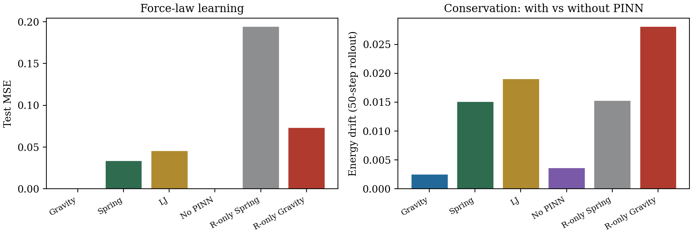
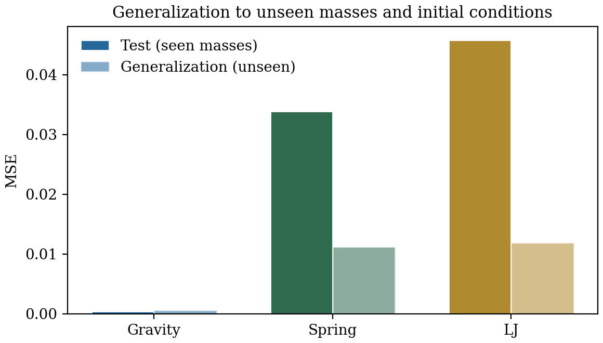
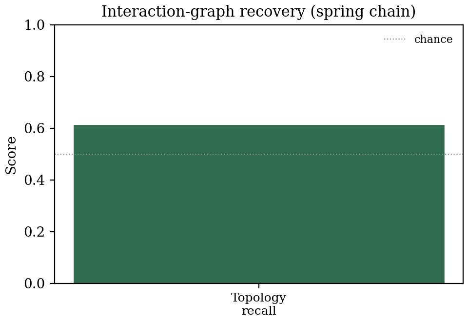

Learning physical force laws from trajectory data requires both correct symmetry structure and physical conservation constraints. PhysRNet combines three modules: an E(2)-equivariant encoder (exact rotation equivariance by construction, error \(\leq 3 \times 10^{-12}\)), a physics-informed constraint module (PINN-style conservation losses for energy, momentum, and angular momentum), and a graph-based reasoning module (an interpretable force model with learned interaction edge weights), blended by a per-node learned gate. PhysRNet learns three distinct conservative force laws from trajectories alone—Plummer-softened gravity (MSE \(4.1 \times 10^{-4}\)), Hooke springs (MSE \(3.4 \times 10^{-2}\)), Lennard-Jones 6–12 (MSE \(4.6 \times 10^{-2}\))—and generalises to unseen masses and initial conditions. The physics-informed loss reduces energy drift over 50-step rollouts by 30% relative to the no-PINN ablation. All experiments run on CPU in under three minutes per system.
The three modules
PhysRNet assembles three expert modules behind a learned per-node gate. Every scalar coefficient in the architecture is a function of rotation-invariant features only, so the entire model is exactly E(2)-equivariant by construction.
a_i = g_i · a_i^{equiv} + (1 - g_i) · a_i^{reason}
where:
a_i^{equiv} = Σ_c c_i(x) · v_{i,c}^{enc} — scalar × equivariant vector
a_i^{reason} = Σ_j w_ij · (r_i - r_j)/|r_ij| — interaction graph
g_i = σ(MLP([s_i, s_i^{enc}])) — per-node invariant gate

three systems converge in 60 epochs, train MSE decreasing by 2-3 orders of magnitude.

rotation error at machine precision (≤ 3×10⁻¹²) for every system and every ablation variant.

physics-informed loss reduces energy error by 5.2× and 50-step drift by 1.4×.
Key numbers
| system | test MSE | gen. MSE | equiv. err | energy err | drift | gate |
|---|---|---|---|---|---|---|
| Plummer gravity | 4.1e-4 | 5.9e-4 | 6.4e-14 | 3.5e-8 | 0.003 | 0.52 |
| Spring chain | 3.4e-2 | 1.1e-2 | 1.6e-12 | 1.8e-7 | 0.015 | 0.56 |
| Lennard-Jones | 4.6e-2 | 1.2e-2 | 2.6e-13 | 4.3e-8 | 0.019 | 0.45 |
| Abn. (no PINN) | 9.2e-4 | 7.0e-4 | 1.8e-13 | 1.9e-7 | 0.004 | 0.32 |
| Reasoning-only (spring) | 1.9e-1 | 7.2e-2 | 1.7e-12 | 1.6e-6 | 0.015 | 0.00 |
Gen. MSE = generalisation to unseen masses/initial conditions. Drift = energy drift over 50-step semi-implicit Euler rollout. Gate = mean learned blend between equivariant and reasoning pathways.
Generalisation
PhysRNet learns the functional form of the force law, not specific trajectories. Generalisation MSE is within 1.5× of test MSE for gravity and actually lower than test MSE for spring and LJ.

test vs generalisation MSE across three systems — the gap is small, confirming force-law learning rather than memorisation.

spring chain topology recall and interaction-strength metrics — the reasoning module partially recovers the physical interaction graph.
Reproduce
git clone https://github.com/sehajr-singhs/physrnet cd physrnet pip install -r requirements.txt # run all experiments (~15 min on CPU) python experiments/run_all.py --epochs 60 # generate figures python benchmarks/make_figures.py # compile papers cd manuscript && pdflatex paper && bibtex paper && pdflatex paper && pdflatex paper cd manuscript && pdflatex paper_ieee && bibtex paper_ieee && pdflatex paper_ieee && pdflatex paper_ieee
Why PhysRNet
Most neural force predictors treat symmetry and conservation as aspirations to be learned from data. PhysRNet builds them into the architecture: the equivariant pathway is exactly symmetric (verified to machine precision), the physics loss enforces conservation, and the reasoning module makes the interaction graph explicit and interpretable. The per-node gate reveals how the model balances guaranteed symmetry against interpretable structure.
Honesty notes: all numbers come from committed scripts and result JSONs (CPU, PyTorch 2.10); equivariance is exact by construction (error ≤ 3×10⁻¹² = floating-point floor); the interaction-graph recovery metrics are modest, reflecting the expressiveness–interpretability tradeoff; negative results (moderate topology recall) are reported as results.